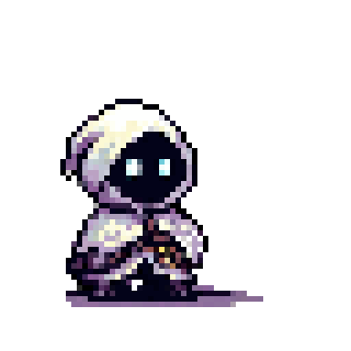

Início
Olá, este é meu site, onde você poderá conhecer mais dos meus projetos e sobre mim:
Em meu perfil do GitHub estão disponibilizados alguns dos meus projetos feitos até o momento. Grande parte se trata de atividades da faculdade e códigos criados para ela
Há também um projeto próprio disponibilizado que se trata de uma animação em pixels feita por mim. Ela foi feita frame por frame usando um aplicativo chamado AsePrite. O personagem criado se chama "Hope" e pretendo usá-lo futuramente para a criação de um jogo



Sobre
Curiosidades


Contato
petronioddj@hotmail.com
@petroniodias1